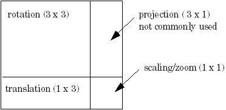

Functions Introduced:
All coordinate systems are treated in Creo TOOLKIT as if they were three-dimensional. Therefore, a point in any of the coordinate systems described is always represented in
C by the following type:
typedef double ProPoint3d[3]
Vectors are distinguished for clarity by a different, though equivalent, declaration:
typedef double ProVector[3]
, Screen, window and section coordinates contain a Z value whose positive direction is normal to the screen or the sketch.
The value of Z is not generally important when specifying a screen location as an input to a function, but it is useful in
other situations. For example, if the user selects a datum plane, you can find out which side is towards the user by calculating
the normal to the plane, transforming to screen coordinates, then looking at the sign of the Z coordinate.
A transformation between two coordinate systems is represented by a 4x4 matrix, with the following type:
typedef double ProMatrix[4][4];
This combines the conventional 3x3 matrix that describes the relative orientation of the two systems, and the vector that
describes the shift between them.
Transformation Matrix

Creo TOOLKIT provides two utilities for performing coordinate transformations. The function ProPntTrfEval() transforms a three-dimensional point, and ProVectorTrfEval() transforms a three-dimensional vector.
The source code for other utilities that manipulate transformation matrices is located in the file Matrix.c located at <creo_toolkit_loadpoint>/protk_appls/pt_examples/pt_utils/Util.
The following sections describe the functions needed to obtain the transformation matrix between two different coordinate
systems in Creo Parametric.